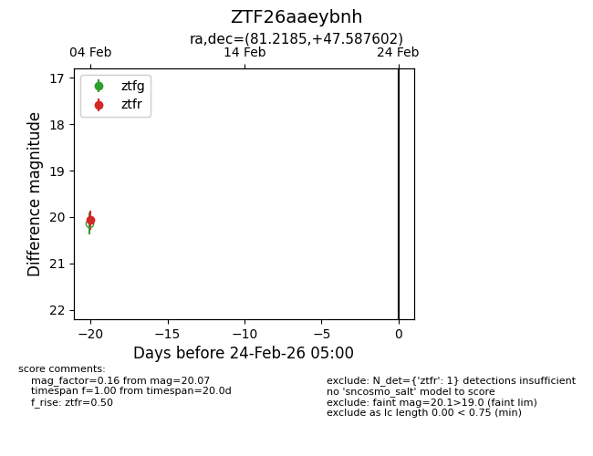
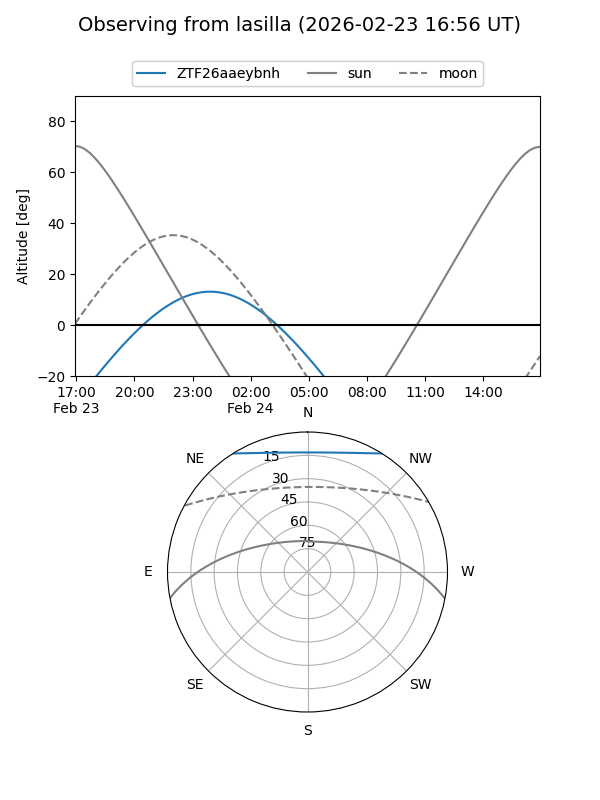
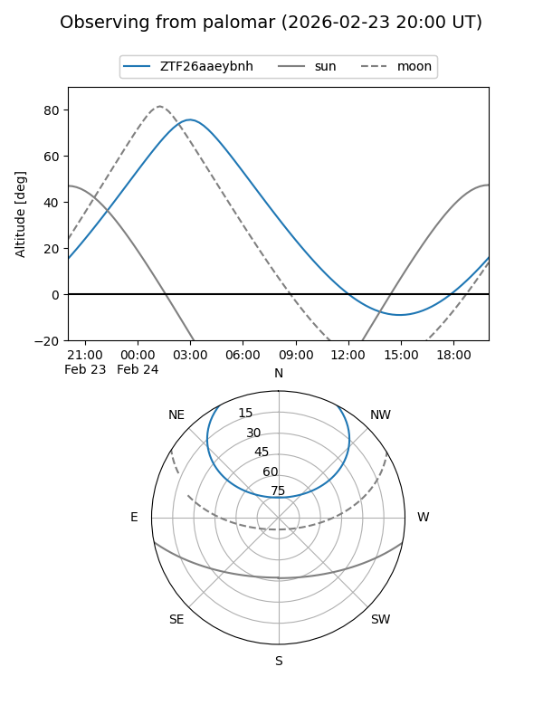

ZTF26aaeybnh
Target ZTF26aaeybnh at 2026-02-24 09:08
Aliases and brokers:
FINK: link
Lasair: link
ALeRCE: link
alt names
ZTF26aaeybnh (ztf,fink_ztf)
Coordinates:
equatorial (ra, dec) = 81.2185,+47.58760
equatorial (HMS+DMS) = 05:24:52.43,+47:35:15.37
galactic (l, b) = (162.0654,+6.62012)
Flags:
Photometry:
last ztfr=20.07
1 ztfr detections
Lightcurve

Visibility


Additional plots